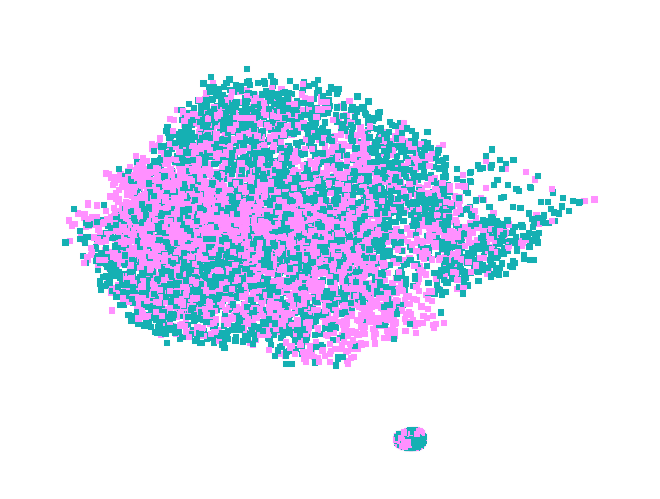

2.8. GNN#
This is an implementation from the NIFTY project on HELOC dataset as implemented by @alefog with additional preprocessing.
import random
import numpy as np
np.random.seed(0)
import pandas as pd
import requests
import scipy.sparse as sp
import torch
import torch.nn as nn
import torch.nn.functional as F
import torch.optim as optim
from scipy.spatial import distance_matrix
from sklearn.metrics import roc_auc_score
from sklearn.neighbors import NearestNeighbors
from torch_geometric.nn import GINConv
from torch_geometric.utils import convert
from typing import Tuple
Preprocessing
threshold = 0.10
knn_k = 5
def build_relationship(x, thresh=threshold):
df_euclid = pd.DataFrame(
1 / (1 + distance_matrix(x.T.T, x.T.T)), columns=x.T.columns, index=x.T.columns
)
df_euclid = df_euclid.to_numpy()
idx_map = []
for ind in range(df_euclid.shape[0]):
max_sim = np.sort(df_euclid[ind, :])[-2]
neig_id = np.where(df_euclid[ind, :] > thresh * max_sim)[0]
random.seed(0)
random.shuffle(neig_id)
for neig in neig_id:
if neig != ind:
idx_map.append([ind, neig])
idx_map = np.array(idx_map)
return idx_map
def build_relationship_knn(x, k):
nn = NearestNeighbors(n_neighbors=k + 1, metric="euclidean")
nn.fit(x)
distances, indices = nn.kneighbors(x)
idx_map = []
for i, neighbors in enumerate(indices):
for neighbor in neighbors[1:]:
idx_map.append([i, neighbor])
return np.array(idx_map)
def load_dataset(dataset, edges, predict_attr, path):
idx_features_labels = pd.read_csv(dataset)
# make more generic with label binarizer
idx_features_labels.replace(
{"RiskPerformance": {"Bad": 1, "Good": 0}}, inplace=True
)
header = list(idx_features_labels.columns)
header.remove(predict_attr)
edges_unordered = requests.get(edges)
edges_unordered = np.array(edges_unordered.text)
edges_unordered = build_relationship_knn(idx_features_labels[header], k=knn_k)
features = sp.csr_matrix(idx_features_labels[header], dtype=np.float32)
labels = idx_features_labels[predict_attr].values
idx = np.arange(features.shape[0])
idx_map = {j: i for i, j in enumerate(idx)}
edges = np.array(
list(map(idx_map.get, edges_unordered.flatten())), dtype=int
).reshape(edges_unordered.shape)
adj = sp.coo_matrix(
(np.ones(edges.shape[0]), (edges[:, 0], edges[:, 1])),
shape=(labels.shape[0], labels.shape[0]),
dtype=np.float32,
)
adj = adj + adj.T.multiply(adj.T > adj) - adj.multiply(adj.T > adj)
adj = adj + sp.eye(adj.shape[0])
features = torch.FloatTensor(np.array(features.todense()))
labels = torch.LongTensor(labels)
random.seed(0)
label_idx_0 = np.where(labels == 0)[0]
label_idx_1 = np.where(labels == 1)[0]
random.shuffle(label_idx_0)
random.shuffle(label_idx_1)
num_label_1_test = int(label_idx_1.size * 0.3)
num_label_0_test = int(label_idx_0.size * 0.3)
num_label_1_train = label_idx_1.size - num_label_1_test
num_label_0_train = label_idx_0.size - num_label_0_test
idx_train_1 = label_idx_1[:num_label_1_train]
idx_test_1 = label_idx_1[num_label_1_train : num_label_1_train + num_label_1_test]
idx_train_0 = label_idx_0[:num_label_0_train]
idx_test_0 = label_idx_0[num_label_0_train : num_label_0_train + num_label_0_test]
idx_train = np.concatenate((idx_train_0, idx_train_1))
idx_test = np.concatenate((idx_test_0, idx_test_1))
random.seed(90)
random.shuffle(idx_train)
random.shuffle(idx_test)
idx_train = torch.LongTensor(idx_train)
idx_test = torch.LongTensor(idx_test)
return adj, features, labels, idx_train, idx_test
Load data
# Load data
predict_attr = "RiskPerformance"
path_heloc = (
"https://raw.githubusercontent.com/alessandrofogli/"
"Exploring-the-Potential-of-Graph-Neural-Networks-for-Credit-Scoring"
"/main/data/FICO"
)
adj, features, labels, idx_train, idx_test = load_dataset(
f"{path_heloc}/heloc.csv",
f"{path_heloc}/heloc_edges.txt",
predict_attr,
path=path_heloc
)
Setup device
seed = 0
device = torch.device("cuda" if torch.cuda.is_available() else "cpu")
torch.manual_seed(seed)
torch.cuda.manual_seed(seed)
random.seed(seed)
np.random.seed(seed)
Feature preprocessing (XGBoost)
from sklearn.model_selection import train_test_split
import xgboost as xgb
from xgboost import XGBClassifier
X = pd.DataFrame(features.numpy().copy())
X.columns = [f"feature_{i+1}" for i in range(len(X.columns))]
y = pd.Series(labels.numpy().copy())
idx_train_xgb, idx_test_xgb = train_test_split(
X.index,
stratify=y,
test_size=0.3,
random_state=0
)
n_estimators = 100
xgb_model = XGBClassifier(
n_estimators=n_estimators,
max_depth=7,
learning_rate=0.3,
base_score=0.5,
tree_method="hist",
objective="binary:logistic",
max_leaves=5,
reg_alpha=50,
reg_lambda=30,
colsample_bytree=0.5,
n_jobs=3,
random_state=0
)
xgb_model.fit(features[idx_train_xgb], labels[idx_train_xgb])
auc_score = roc_auc_score(
labels[idx_train_xgb],
xgb_model.predict_proba(features[idx_train_xgb])[:, 1]
)
print(auc_score*2-1)
auc_score = roc_auc_score(
labels[idx_test_xgb],
xgb_model.predict_proba(features[idx_test_xgb])[:, 1]
)
print(auc_score*2-1)
0.6058592739372641
0.5902047212047212
# Create a list to store the margins for each tree
tree_margins = []
# Tree iteration
for i in range(n_estimators):
margins = xgb_model.predict(
X,
output_margin=True,
base_margin=np.zeros(X.shape[0]),
iteration_range=(i, i+1)
)
tree_margins.append(margins)
# Create a DataFrame with the margins for each tree
leaf_predictions = pd.DataFrame(tree_margins).T
leaf_predictions.index = y.index
# Assign column names if needed
leaf_predictions.columns = [f"tree_{i+1}" for i in range(100)]
features_tree = sp.csr_matrix(leaf_predictions, dtype=np.float32)
features_tree = torch.FloatTensor(np.array(features_tree.todense())).to(device)
features_tree = features_tree.to(device)
Model
edge_index = convert.from_scipy_sparse_matrix(adj)[0]
edge_index = edge_index.to(device)
num_class = labels.unique().shape[0] - 1
nfeat = features_tree.shape[1] # features.shape[1]
features = features.to(device)
labels = labels.to(device)
class GIN(nn.Module):
def __init__(self, nfeat, nhid, nclass, dropout):
super(GIN, self).__init__()
self.mlp1 = nn.Sequential(
nn.Linear(nfeat, nhid),
nn.Sigmoid(), # nn.ReLU(),
nn.BatchNorm1d(nhid),
nn.Linear(nhid, nhid),
nn.Sigmoid(), # nn.ReLU(),
nn.BatchNorm1d(nhid),
)
self.conv1 = GINConv(self.mlp1)
self.fc = nn.Linear(nhid, nclass)
self.dropout = nn.Dropout(dropout)
self.init_weights()
def init_weights(self):
for m in self.modules():
if isinstance(m, nn.Linear):
nn.init.xavier_uniform_(m.weight.data)
if m.bias is not None:
m.bias.data.fill_(1.0)
def forward(self, x, edge_index):
x = self.conv1(x, edge_index)
x = self.dropout(x)
x = self.fc(x)
return x
def train_and_evaluate(
model: nn.Module,
optimizer: optim.Optimizer,
features: torch.Tensor,
edge_index: torch.Tensor,
labels: torch.Tensor,
idx_train: torch.Tensor,
idx_test: torch.Tensor,
device: torch.device,
num_epochs: int
) -> Tuple[float, float]:
"""
Train and evaluate the GNN model.
Args:
model (torch.nn.Module): The GNN model.
optimizer (torch.optim.Optimizer): The optimizer.
features (torch.Tensor): The input features.
edge_index (torch.Tensor): The edge index tensor.
labels (torch.Tensor): The ground truth labels.
idx_train (torch.Tensor): The indices of the training set.
idx_test (torch.Tensor): The indices of the test set.
device (torch.device): The device (CPU or GPU) to run the computation.
num_epochs (int): The number of training epochs.
Returns:
Tuple[float, float]: A tuple of the AUC scores for the training and test sets.
"""
for epoch in range(num_epochs):
model.train()
optimizer.zero_grad()
output = model(features, edge_index)
loss_train = F.binary_cross_entropy_with_logits(
output[idx_train], labels[idx_train].unsqueeze(1).float().to(device)
)
loss_train.backward()
optimizer.step()
model.eval()
with torch.no_grad():
output_train = model(features, edge_index)[idx_train]
output_test = model(features, edge_index)[idx_test]
auc_train = roc_auc_score(
labels[idx_train].cpu().numpy(), torch.sigmoid(output_train).cpu().numpy()
)
auc_test = roc_auc_score(
labels[idx_test].cpu().numpy(), torch.sigmoid(output_test).cpu().numpy()
)
return auc_train, auc_test
import optuna
from optuna.samplers import TPESampler
num_epochs=50
def objective(trial):
# Define the hyperparameters to tune
dropout = trial.suggest_float('dropout', 0.1, 0.8, step=0.005)
nhid = trial.suggest_int('nhid', 32, 128)
lr = trial.suggest_float('lr', 1e-5, 1e-2, log=True)
weight_decay = trial.suggest_float('weight_decay', 1e-6, 1e-3)
# Create the model with the specified hyperparameters
model = GIN(nfeat, nhid, num_class, dropout)
model.to(device)
optimizer = optim.Adam(model.parameters(), lr=lr, weight_decay=weight_decay)
# Train and evaluate the model
train_score, test_score = [
(score * 2 - 1) for score in train_and_evaluate(
model=model,
optimizer=optimizer,
features=features_tree, # features
edge_index=edge_index,
labels=labels,
idx_train=idx_train,
idx_test=idx_test,
device=device,
num_epochs=num_epochs
)
]
train_err = 1 - train_score
test_err = 1 - test_score
score = test_score * abs(train_err/test_err)
return score
initial_params = {
"dropout": 0.5,
"nhid": 16,
"lr": 1e-3,
"weight_decay": 1e-5
}
sampler = TPESampler(seed=seed)
study = optuna.create_study(direction='maximize', sampler=sampler)
study.enqueue_trial(initial_params)
print("Created new study.")
study.optimize(objective, n_trials=20)
best_params = study.best_params
best_gini = study.best_value
[I 2023-11-06 14:46:04,154] A new study created in memory with name: no-name-8b02d7dd-08f9-43e7-9729-81f309d67412
/Users/deburky/Library/Caches/pypoetry/virtualenvs/risk-practitioner-ebook-NcspVTUP-py3.10/lib/python3.10/site-packages/optuna/trial/_trial.py:651: UserWarning: Fixed parameter 'nhid' with value 16 is out of range for distribution IntDistribution(high=128, log=False, low=32, step=1).
warnings.warn(
Created new study.
[I 2023-11-06 14:46:05,051] Trial 0 finished with value: 0.5759487351427381 and parameters: {'dropout': 0.5, 'nhid': 16, 'lr': 0.001, 'weight_decay': 1e-05}. Best is trial 0 with value: 0.5759487351427381.
[I 2023-11-06 14:46:06,390] Trial 1 finished with value: 0.5632437245550238 and parameters: {'dropout': 0.485, 'nhid': 101, 'lr': 0.0006431172050131992, 'weight_decay': 0.0005453382998139001}. Best is trial 0 with value: 0.5759487351427381.
[I 2023-11-06 14:46:07,652] Trial 2 finished with value: 0.5636536003439161 and parameters: {'dropout': 0.395, 'nhid': 94, 'lr': 0.00020547625125911338, 'weight_decay': 0.0008918812277812978}. Best is trial 0 with value: 0.5759487351427381.
[I 2023-11-06 14:46:08,826] Trial 3 finished with value: 0.571885169456479 and parameters: {'dropout': 0.775, 'nhid': 69, 'lr': 0.0023723300729921923, 'weight_decay': 0.0005293660248331517}. Best is trial 0 with value: 0.5759487351427381.
[I 2023-11-06 14:46:10,267] Trial 4 finished with value: 0.19121811169182953 and parameters: {'dropout': 0.5, 'nhid': 121, 'lr': 1.633458761106948e-05, 'weight_decay': 8.804217040183917e-05}. Best is trial 0 with value: 0.5759487351427381.
[I 2023-11-06 14:46:11,599] Trial 5 finished with value: 0.5637529446187912 and parameters: {'dropout': 0.11, 'nhid': 112, 'lr': 0.002160082074140205, 'weight_decay': 0.0008701421360985725}. Best is trial 0 with value: 0.5759487351427381.
[I 2023-11-06 14:46:13,040] Trial 6 finished with value: 0.5674100704234588 and parameters: {'dropout': 0.785, 'nhid': 109, 'lr': 0.00024234724484675926, 'weight_decay': 0.0007807486471101691}. Best is trial 0 with value: 0.5759487351427381.
[I 2023-11-06 14:46:14,367] Trial 7 finished with value: 0.3963268936322647 and parameters: {'dropout': 0.18, 'nhid': 94, 'lr': 2.6919058249260695e-05, 'weight_decay': 0.0009447242481325345}. Best is trial 0 with value: 0.5759487351427381.
[I 2023-11-06 14:46:15,591] Trial 8 finished with value: 0.5464750157841076 and parameters: {'dropout': 0.46499999999999997, 'nhid': 72, 'lr': 6.218230782016852e-05, 'weight_decay': 0.0007744594557447825}. Best is trial 0 with value: 0.5759487351427381.
[I 2023-11-06 14:46:16,966] Trial 9 finished with value: 0.031645053791526316 and parameters: {'dropout': 0.42000000000000004, 'nhid': 87, 'lr': 1.1385953381489408e-05, 'weight_decay': 0.0006180178615788013}. Best is trial 0 with value: 0.5759487351427381.
[I 2023-11-06 14:46:17,940] Trial 10 finished with value: 0.5670732004809547 and parameters: {'dropout': 0.64, 'nhid': 34, 'lr': 0.007216635702812183, 'weight_decay': 2.1025797331270055e-05}. Best is trial 0 with value: 0.5759487351427381.
[I 2023-11-06 14:46:18,905] Trial 11 finished with value: 0.5778559520440971 and parameters: {'dropout': 0.765, 'nhid': 32, 'lr': 0.001711558796951975, 'weight_decay': 0.0002891378553830189}. Best is trial 11 with value: 0.5778559520440971.
[I 2023-11-06 14:46:19,885] Trial 12 finished with value: 0.573865962751992 and parameters: {'dropout': 0.645, 'nhid': 35, 'lr': 0.0010031538187928713, 'weight_decay': 0.00025165825096247946}. Best is trial 11 with value: 0.5778559520440971.
[I 2023-11-06 14:46:20,907] Trial 13 finished with value: 0.563883357352536 and parameters: {'dropout': 0.28, 'nhid': 52, 'lr': 0.004809420660529726, 'weight_decay': 0.0002644227597293367}. Best is trial 11 with value: 0.5778559520440971.
[I 2023-11-06 14:46:22,003] Trial 14 finished with value: 0.55604530668746 and parameters: {'dropout': 0.63, 'nhid': 49, 'lr': 0.0007074624905651121, 'weight_decay': 0.00030575736618023233}. Best is trial 11 with value: 0.5778559520440971.
[I 2023-11-06 14:46:23,083] Trial 15 finished with value: 0.566547092290008 and parameters: {'dropout': 0.5750000000000001, 'nhid': 47, 'lr': 0.0019944093242273498, 'weight_decay': 0.00013587628858637805}. Best is trial 11 with value: 0.5778559520440971.
[I 2023-11-06 14:46:23,974] Trial 16 finished with value: 0.5677649630696817 and parameters: {'dropout': 0.29500000000000004, 'nhid': 32, 'lr': 0.008805407259112339, 'weight_decay': 0.00040489530359849493}. Best is trial 11 with value: 0.5778559520440971.
[I 2023-11-06 14:46:25,114] Trial 17 finished with value: 0.5675660258167539 and parameters: {'dropout': 0.72, 'nhid': 60, 'lr': 0.0003487579030765675, 'weight_decay': 0.00018858577758321124}. Best is trial 11 with value: 0.5778559520440971.
[I 2023-11-06 14:46:26,381] Trial 18 finished with value: 0.5603569512774704 and parameters: {'dropout': 0.335, 'nhid': 43, 'lr': 0.0033981958615031775, 'weight_decay': 5.026861977554969e-06}. Best is trial 11 with value: 0.5778559520440971.
[I 2023-11-06 14:46:27,732] Trial 19 finished with value: 0.5724642253841159 and parameters: {'dropout': 0.545, 'nhid': 61, 'lr': 0.0009973533769692085, 'weight_decay': 0.00038500886212232605}. Best is trial 11 with value: 0.5778559520440971.
model = GIN(
nfeat=nfeat,
nhid=best_params["nhid"],
nclass=num_class,
dropout=best_params["dropout"],
)
model.to(device)
# Train model
optimizer = optim.Adam(
model.parameters(),
lr=best_params["lr"],
weight_decay=best_params["weight_decay"]
)
num_epochs = 87
auc_train, auc_test = train_and_evaluate(
model=model,
optimizer=optimizer,
features=features_tree, # features
edge_index=edge_index,
labels=labels,
idx_train=idx_train,
idx_test=idx_test,
device=device,
num_epochs=num_epochs
)
print(
f"Train Gini score: {auc_train*2-1:.2%}\n"
f"Test Gini score: {auc_test*2-1:.2%}"
)
Train Gini score: 57.05%
Test Gini score: 57.04%
Visualize the graph network
import networkx as nx
from matplotlib import pyplot as plt
%matplotlib inline
# Subsample data for plotting
num_observations = 9000
features_nx = features_woe[:num_observations]
labels_nx = labels[:num_observations]
adj_nx = adj[:num_observations, :num_observations]
# Create a list of node IDs by using the indices of the nodes dataframe
node_ids = list(range(len(features_nx)))
edge_pairs = [tuple(row) for row in adj_nx.toarray()]
# Create a list of node IDs by using the indices of the nodes dataframe
node_ids = list(range(len(features_nx)))
nonzero_indices = adj_nx.nonzero()
edge_pairs = list(zip(nonzero_indices[0], nonzero_indices[1]))
# Create a graph using the node IDs and edge pairs
G = nx.Graph()
G.add_nodes_from(node_ids)
G.add_edges_from(edge_pairs)
node_colors = ['#ff90ff' if label == 1 else '#15b0b3' for label in labels_nx]
# Draw the graph
nx.draw(
G,
# pos=nx.spring_layout(G),
with_labels=False,
node_color=node_colors,
node_size=20,
node_shape="s",
edge_color='white',
alpha=1.0,
width=0.01,
linewidths=0.01
)
# Draw edges
# nx.draw_networkx_edges(
# G,
# pos=nx.spring_layout(G),
# style=':',
# width=1e-5
# )
plt.show()
